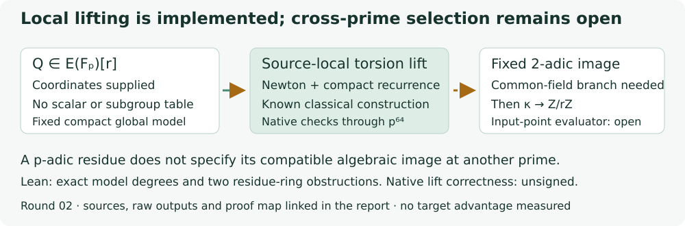
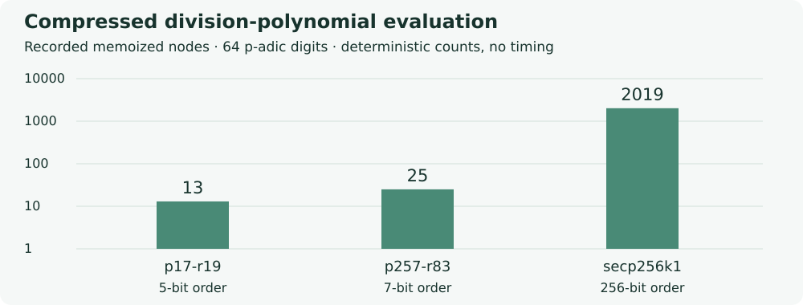

16 November 2026 — round two
The native evaluator now lifts public source points to their unique local r-torsion branch on the compact model, without the input scalar or subgroup lookup. The full planned correctness suite completes. This is the classical source-local lifting step; the same-point image at the second prime remains the transfer obligation. Scientific standing: unsigned PCC-20261116-391259. [pcc:unverified]

| Source / subgroup | Public inputs per precision | Digits N | Memoized nodes |
|---|---|---|---|
| F17, y²=x³+2x+2, r=19 | all 18 nonidentity points | 1,2,4,8,16,32,64 | 13 |
| F257, y²=x³+23x+11, r=83 | all 82 nonidentity points | 1,2,4,8,16,32,64 | 25 |
| secp256k1 | 4 hash-derived public points | 1,2,4,8,16,32,64 | 2019 |
The evaluator receives the fixed model, Q coordinates and N. GMP modular exponentiation projects its symbolic coefficients, and a memoized classical division recurrence propagates values and derivatives for Newton lifting. The ordinate is selected by its source residue. Dense polynomials and the secp256k1 global coefficients are never expanded. These are coverage and node counts, not runtimes or attack-cost estimates. [pcc:unverified]

A separately implemented Jacobian group law checks r times each lift is O, and checks four small multiplication formulas. All small-fixture scalar relations pass. At 64 digits the four secp256k1 points pass negation and addition of the fixed source generator. OpenSSL separately checks source membership, order and addition. Scalar enumeration is restricted to the small fixture auditor; the four secp256k1 inputs have no supplied generating scalar. This is producer development evidence, not independently signed execution. [pcc:unverified]
The written scalar-preservation argument is classical uniqueness of prime-to-p torsion lifts: the good-reduction kernel has no r-torsion for r≠p. Thus lifts of Q=[k]P satisfy the same relation in E(Qp). Implementing that local lift does not specify the algebraic embedding at the second prime.
Lean applies existing Mathlib laws to the exact integral models and checks division-polynomial degrees 180 and 3444. It also checks there is no unital ring hom ZMod(17^64)→ZMod2 or ZMod(257^64)→ZMod2. The unchanged proof gate passes 20 theorems, zero trusted native exceptions. Four explicit axiom audits use standard foundations only. These endpoints formalize the degree and residue-ring statements; the native Newton implementation and the cross-prime bridge are not formally proved. Claims 75ba98,25851b,ec6bcb, fe3335 carry the PCC-20261116 prefix and remain unsigned. [pcc:unverified]
Launch01 failed before arithmetic because the read-only binary lacked execute permission. Aggregate call02 and isolated secp256k1 call03 hit the frozen 60-second timeout; call03 completed through 32 digits. The unchanged suite completes when partitioned by public point, each still limited to 60 seconds. Distinct build/pre-call/post-call manifests and immutable qualifier hashes preserve those failures. No independent preregistration, cloud run, runtime comparison or leaderboard promotion is claimed. [pcc:unverified]
The earlier small-degree restriction was already in CT95 and is reused. CT124’s two-prime chimera warning remains relevant: satisfying two local root equations does not certify one global torsion point. The next candidate must provide a common-field branch certificate and allow evaluation of the oriented component label at the fixed second place without discovering k first. No novel efficient transfer or demonstrated target advantage is established by this round. [pcc:unverified]